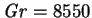
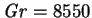

The boundaries of the conduction regime for plane cavities were discussed in §5.4. Here, the possible effects of a finite spanwise aspect ratio are considered.
An investigation of the three-dimensional stability of the conduction regime
flow is beyond the scope of the present project, but since the vorticity
in the plane of transverse odd-symmetry--the plane of shear between the
rising and falling fluid streams--only decreases with decreasing  (see
§7.6.1), it is expected that the critical Grashof number
for instability in any cavity of bounded section would be larger. This would
be analogous with the linear stability analysis of finite rectangular boxes
heated from below; Davis (1967) found that as the length of
the rolls (i.e. the span of the box) decreased from infinity, the critical
Rayleigh number increased. Thus while the conduction regime is somewhat
restrictive--Gill and Davey (1969) calculated that the
critical temperature difference for a 1cm air gap is around 40K, but only
5K for a 2cm gap--it may be less so once the third dimension is taken
into account.
(see
§7.6.1), it is expected that the critical Grashof number
for instability in any cavity of bounded section would be larger. This would
be analogous with the linear stability analysis of finite rectangular boxes
heated from below; Davis (1967) found that as the length of
the rolls (i.e. the span of the box) decreased from infinity, the critical
Rayleigh number increased. Thus while the conduction regime is somewhat
restrictive--Gill and Davey (1969) calculated that the
critical temperature difference for a 1cm air gap is around 40K, but only
5K for a 2cm gap--it may be less so once the third dimension is taken
into account.
The importance of treating tall cavities as three-dimensional has been
stressed by Chait and Korpela (1989) for another reason. They
showed that for air in the
 case, the secondary
two-dimensional multiple cells are only stable up to
, beyond which
the flow is no longer restricted to vertical-transverse planes.
case, the secondary
two-dimensional multiple cells are only stable up to
, beyond which
the flow is no longer restricted to vertical-transverse planes.